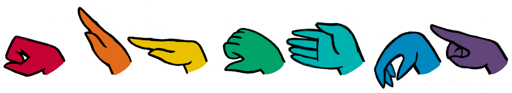

Which dialect are we speaking? To know if you are communicating with another speaker of Symmetric, you may say "dosol, soldo?" to mean "We, ours?" which have no obvious meaning in other dialects.

The words in Solresol consist of sequences of notes.
Invented by Jean-François Sudre, Solresol is an artificial language based on the seven syllables of Music(do, re, mi, fa, sol, la, si). There are no specific pronunciation rules beyond the standard readings of the solfège.
Due to each syllable being fairly distinct, they may be pronounced in almost any way the reader prefers, but it is necessary to leave a brief pause between words so that each word remains clearly separate. It is absolutely unnecessary to be familiar with music to learn and to speak this language.
The language is made of permutations of the 7 syllables, but before we get into words, let's begin with the elementary particles of one note:
| Modern Symmetrical Unary(7) | |||||
|---|---|---|---|---|---|
| Solfège | French IPA | English IPA | Note | Meaning | |
| Do | /do/ | /do ʊ/ | C 261.6Hz | no | |
| Re | / ʁɛ/ | /ɹeɪ/ | D 293.7Hz | and, also | |
| Mi | /mi/ | /miː/ | E 329.6Hz | or | |
| Fa | /fa/ | /fɑː/ | F 349.2Hz | at, to | |
| Sol | /sɔl/ | /so ʊl/ | G 392.0Hz | but, if | |
| La | /la/ | /lɑː/ | A 440.0Hz | the, then, by | |
| Si | /si/ | /siː/ | B 493.9Hz | yes | |
The following document presents the Modern Symmetrical dialect of Sudre's original terms of two syllables, to learn more about the differences, see dialects. This is the variance of the language that is used in the novel Wiktopher.
| Modern Symmetrical Binary(49) | |||||||
|---|---|---|---|---|---|---|---|
| -do | -re | -mi | -fa | -sol | -la | -si | |
| Do- | (past) | I, me | you(sing.) | they(sing.) | we | you(plur.) | they(plur.) |
| Re- | my, mine | (pluperfect) | what | without, alone | outside, out | known | none, nothing |
| Mi- | your(sing.) | that, which | (future) | whose, of which | well(adv) | near, here | late, evening, night |
| Fa- | their(sing.) | with, jointly | this, that, these | (conditional) | why | positive | much, very |
| Sol- | our | within, inside | ill(adv) | because | (imperative) | always | thanks |
| La- | your(plur.) | unknown | far, there | negative | never | (present participle) | formal title |
| Si- | their(plur.) | each, every | early, morning, day | few, scarcely | sorry | affectionate title | (passive participle) |
Grammar
To keep sentences clear, especially with the possibility of information loss while communicating, certain parts of speech follow a strict word order.
Generic: subject direct-obj adjective tense verb adverb indirect-obj
English: I bought the driver a fragile present. Result: I present fragile bought the driver.
The subject is always at the start of the sentence.
-
Dore misolsila
I dance.
Adjectives always follow the noun they modify, adverbs always follow the verb they modify.
- Faresimi relado A sleepy cat.
- Doredosisol mifasol A tall giraffe.
- Doredoresi fasimire A fast rabbit.
Tenses always precede verbs.
- Dodo mirefado was saying
- Rere mirefado had said
- Mimi mirefado will say
- Fafa mirefado would say
- Solsol mirefado let's say
- Lala mirefado saying
- Sisi mirefado said
Direct objects always come before the verb, and indirect objects always comes after the verb.
- Dore ladosol remila dola I give you the book.
- Domi fa refadosi fasimisol dore You're taking me to the library.
- Dolafare solsol fafalami dosi Make them food.
Affirmative statements are indicated by a qualifier followed by the possessive personal pronoun:
- Domisol redo I'm healthy.
- Solsimi soldo We're unlucky.
- Mifare fado She's fun.
Modality is indicated by using fasi before an adjective for the augmentative and after an adjective for the superlative. It is the same for substantives. Placed before an adjective, sifa is diminutive, and placed after an adjective is the further diminutive.
- Fasi domisol redo I'm very healthy.
- Misi fasi lado You are extremely late.
- Sifa sire It's quite unfair.
Negation is indicated by placing do before the word to be negated and is not repeated unnecessarily.
- Do solsol midofala Don't leave.
- Dore do fafa lamisol I couldn't forget.
- Sido domisol do lafa Their health is not bad.
Questions are indicated by ending a sentence with sol:
- Domiremi sol Do you see it?
- Misi fasi redo sol Am I extremely late?
- Solmido remi sol Are you sick?
- Fa sol Where to?
Numbers
Numbers use double syllables and are formed using the French-style assemblage sixty-ten to form seventy, and eighty-ten to form ninety.
| 0 | dodore | 10 | mimisol | 20 | fafare |
| 1 | redodo | 11 | mimila | 30 | fafami |
| 2 | remimi | 12 | mimisi | 40 | fafasol |
| 3 | refafa | 13 | midodo | 50 | fafala |
| 4 | resolsol | 14 | mirere | 60 | fafasi |
| 5 | relala | 15 | mifafa | 70 | fafasi mimisol |
| 6 | resisi | 16 | misolsol | 80 | fafado |
| 7 | mimido | 17 | milala | 90 | fadodo mimisol |
| 8 | mimire | 18 | misisi | 100 | farere |
| 9 | mimifa | 19 | fafado | 1000 | famimi |

Arithmetic and fractions are expressed using the infix notation. Larger numbers are formed by writing the bigger units first.
- remimi farere fafare mimifa 229.
- fafasol redodo lafadola relala 41/5.
- resisi mimisol 6:10.
Learning Solresol
A unique feature of Solresol, which reduces the number of words to learn, is that some antonyms can be found by reversing the syllables of a word. Here are some examples:
| misol kind | solmi mean |
| solla always | lasol never |
| fasi much, very | sifa little, scarcely |
| misisol good fortune | solsimi misfortune |
| solsifa laugh | fasisol cry |
| simila easy | lamisi difficult |
To make the words in Solresol easy to learn, some words are classified by order of ideas in families of six. Identifying these groups can make learning the language more approachable.
- doredo time
- doremi day
- dorefa week
- doresol month
- dorela year
- doresi century
- dosoldo hunger
- dosolre eat
- dosolmi bread
- dosolfa thirst
- dosolla drink
- dosolsi water
- domiredo five senses
- domiremi see
- domirefa touch
- domiresol taste
- domirela feel
- domiresi hear
- lafadore counting
- lafadomi addition
- lafadofa subtraction
- lafadosol multiplication
- lafadola division
- lafadosi remainder
The core dictionary of less than 5 syllables contain 2660 words and suffices to form a language that is quite complete, acceptable for most necessary international communications. Combinations of five syllables are reserved to designate animals, plants and minerals. To learn a few basic expressions, see the 130 common words list.
Accessibility
Two people facing each other at a distance, can communicate using the stenographic symbols in such a way that only they can see them. In this manner, a prisoner can, through the bars of the window, express thoughts to the outside world, and vice-versa.
| do | re | mi | fa | sol | la | si | |
| Sauso | êë¥ | êë¶ | êëµ | êë≥ | êëØ | êë§ | êë® |
| Ascii | o | l | n | 7 | z | c | j |
| Braille | ⠁ | ⠂ | ⠃ | ⠄ | ⠅ | ⠆ | ⠇ |
| Binary | 001 | 010 | 011 | 100 | 101 | 110 | 111 |
One can make use of Solresol at sea, to communicate from one ship to another, or from a ship to a seaport, or vice-versa, and again in many ways: By playing tones, or if at night, by displaying bright lanterns or fires of the 7 colors.

To communicate to a deaf-mute, one can take the hand of a blind person and alternately press the fingers, as in the mute Universal Language. One can see that the three extended fingers replace the three lines of the musical scale. For the repeated syllables, one makes the same sign two times with the hand.
Curwen hand signs often go along with the Solfa Scale. These provides a movement to go along with the pitch that we're singing. Moving our bodies at the same time as singing, and thinking and using our voices gives us another way to understand what we're doing. It engages another part of our brains, which means that we work more actively and understand what we're doing.
- La Lasirela, Discord
- Original character by Elemenopi, drawn by Rek Bellum.
Resoldodo Solresol
Roudo Ses, Condensed Solresol, is a way of talking by alternating between using the consonant or the vowel of each note. To disambiguate between syllables with the same letters, like si/sol or fa/la, we will use the pair (s . ou) for sol, (l . au) for la and (t . iu) for si. When a word is one syllable, the vowel is used.
| English | Solresol | Roudo |
|---|---|---|
| Do you speak Solresol? | Solresol domilado sol? | Ses dilo ou? |
| Yes, I speak a little. | Si, domilado sifa. | Iu, dilo ta. |
| Speak to me in Solresol. | Falami Solresol solsol domilado. | Faum Ses sou dilo. |
| What is ... in Solresol? | Milasolsol Solresol ...? | Mausou Ses ...? |
| When is Solresol Day? | Milalami Solresol Misolsimi? | Mauli Ses mouti? |
| On the 25th of May. | Fa Dolala, fafare relala. | A daul, far raul. |
Me ririu maume dou rifiu,
das modou roudi,
dasi modou riule,
diusou modou riure fem.
Sollasoldo Solresol
Sauso Ses, Stenographic Solresol, is a way of writing using the Shavian alphabet which conveniently includes glyphs to match the Curwen hand shapes.

An alphabet to match Solresol's unique characteristics utilizes the similarity of a specific glyphs to its corresponding hand gestures. The following works by accenting letters preceding a note with a chromatic distance of +1 with a dot above, and with a dot below for a chromatic distance of -1.
This plays on the particularity of Solresol of being written entirely with only 7 characters, so that with a diacritics(the dot) placed above a letter to represent the distance of a higher note, and below for a lower note; each word can be written in only as few strokes that is required and rival the density of other natural languages.
A late-night trip by the ocean.
Solrela(Dictionary)
Below is a little translator that also displays text in Roudo & Sauso Ses.
The following table of ternary permutations aims to cover most basic words, to learn more, see Solresol Dialects. Some of the original terms, listed in italic, were replaced by community edits.
| Modern Symmetrical Ternary(343) Sudre | |||||||
|---|---|---|---|---|---|---|---|
| do | do | dododo | note "Do" itself | ||||
| dodore | zero, globe, earth | ||||||
| dodomi | season | ||||||
| dodofa | winter | ||||||
| dodosol | spring | ||||||
| dodola | summer | ||||||
| dodosi | autumn | ||||||
| re | doredo | time, entropy, distribution | |||||
| dorere | january | ||||||
| doremi | day | ||||||
| dorefa | week | ||||||
| doresol | month | ||||||
| dorela | year | ||||||
| doresi | century | ||||||
| mi | domido | universe, creation | |||||
| domire | infinity, unlimited, endless, immeasurable | ||||||
| domimi | february | ||||||
| domifa | duty, obligation providence | ||||||
| domisol | health god, supreme being | ||||||
| domila | perpetuate, eternal, eternity | ||||||
| domisi | immortalize, immortal, indestructible, imperishable | ||||||
| fa | dofado | majesty, grandeur, magnitude | |||||
| dofare | supreme, sovereign | ||||||
| dofami | disagreement magnificence, splendor, superb | ||||||
| dofafa | march | ||||||
| dofasol | marvel, wonder | ||||||
| dofala | miracle, supernatural, miraculous | ||||||
| dofasi | adore, worship | ||||||
| sol | dosoldo | hunger pray | |||||
| dosolre | eat belief, faith, hope | ||||||
| dosolmi | bread christ | ||||||
| dosolfa | thirst holy virgin | ||||||
| dosolsol | april | ||||||
| dosolla | drink religion | ||||||
| dosolsi | water sanctify | ||||||
| la | dolado | charity | |||||
| dolare | philanthropy, philanthropist | ||||||
| dolami | despise, contempt | ||||||
| dolafa | sympathize, pity, compassion | ||||||
| dolasol | inexcusable, unforgivable | ||||||
| dolala | may | ||||||
| dolasi | incomparable, invaluable, unparalleled, without equal | ||||||
| si | dosido | help, assist | |||||
| dosire | support, base | ||||||
| dosimi | shameful, dishonorable, ignominious | ||||||
| dosifa | accomplish, fulfill | ||||||
| dosisol | duty, obligation | ||||||
| dosila | pride, dignity | ||||||
| dosisi | june | ||||||
| re | do | redodo | one, unit | ||||
| redore | think, philosophy | ||||||
| redomi | loathe, repugnance, repulsive | ||||||
| redofa | moral, morally, moralize | ||||||
| redosol | to know, be aquainted | ||||||
| redola | proverb, maxim, quote | ||||||
| redosi | honorable, venerable | ||||||
| re | reredo | july | |||||
| rerere | note "Re" itself | ||||||
| reremi | august | ||||||
| rerefa | september | ||||||
| reresol | october | ||||||
| rerela | november | ||||||
| reresi | december | ||||||
| mi | remido | limit, confine, border, boundary | |||||
| remire | merit | ||||||
| remimi | two, secondly | ||||||
| remifa | benevolence | ||||||
| remisol | food, sustenance | ||||||
| remila | give, gift, present | ||||||
| remisi | inexplicable, indefinable, incomprehensible, inconceivable, enigmatic | ||||||
| fa | refado | look at | |||||
| refare | pass, cross over | ||||||
| refami | displease, unpleasant | ||||||
| refafa | third, thirdly | ||||||
| refasol | encounter, meet | ||||||
| refala | ask, privilege, prerogative | ||||||
| refasi | answer, reply, respond qualify, rights | ||||||
| sol | resoldo | listen | |||||
| resolre | mistake, error | ||||||
| resolmi | leave, come out heresy | ||||||
| resolfa | return atheist | ||||||
| resolsol | fourth | ||||||
| resolla | pay, materialism, materialistic, materialize | ||||||
| resolsi | discourage, discouragement, longsome | ||||||
| la | relado | misanthropy, misanthrope | |||||
| relare | antagonize, inconvenience | ||||||
| relami | distrust, suspect, beware, skittish | ||||||
| relafa | unable, impossible, impracticable, impossibility | ||||||
| relasol | intolerance, severity, rigorism, inflexible, rigid | ||||||
| relala | fifth | ||||||
| relasi | regret | ||||||
| si | resido | mistreat, bully, maltreatment, brutality, rudeness | |||||
| resire | toughness, rigidity | ||||||
| resimi | spite, sulky, grumpiness | ||||||
| resifa | become | ||||||
| resisol | sad, sadness, gloom, melancholy, sad | ||||||
| resila | restless, boredom | ||||||
| resisi | sixth | ||||||
| mi | do | midodo | thirteen | ||||
| midore | sympathy, inclination | ||||||
| midomi | attraction, attract | ||||||
| midofa | prefer, like the most | ||||||
| midosol | admire trinity | ||||||
| midola | reciprocity, mutuality, respective | ||||||
| midosi | fond of, attached, be attached to, friend, friendly, take to | ||||||
| re | miredo | love eachother | |||||
| mirere | fourteen | ||||||
| miremi | beloved, darling | ||||||
| mirefa | tenderness | ||||||
| miresol | acknowledge, gratitude, recognition, be grateful | ||||||
| mirela | devote, focus, devote oneself, dedication | ||||||
| miresi | link, bond, chain, fasten | ||||||
| mi | mimido | seven | |||||
| mimire | eight | ||||||
| mimimi | note "Mi" itself | ||||||
| mimifa | nine | ||||||
| mimisol | ten | ||||||
| mimila | eleven | ||||||
| mimisi | twelve | ||||||
| fa | mifado | agreement | |||||
| mifare | please, like, pleasant, seductive | ||||||
| mifami | sigh | ||||||
| mifafa | fifteen | ||||||
| mifasol | raise, elevate | ||||||
| mifala | desire, wish, want, desirous | ||||||
| mifasi | error, incorrigible | ||||||
| sol | misoldo | come the holy spirit | |||||
| misolre | enter the grace of god | ||||||
| misolmi | taste, sweetness, pleasant | ||||||
| misolfa | benevolence, affability, goodwill, amiability, kind | ||||||
| misolsol | sixteen | ||||||
| misolla | equal, equality, equally | ||||||
| misolsi | kind, pleasant | ||||||
| la | milado | appraise, estimate, consider | |||||
| milare | confide, confidence | ||||||
| milami | passion | ||||||
| milafa | idolize, dote on, idolatry | ||||||
| milasol | love (for things) | ||||||
| milala | seventeen | ||||||
| milasi | love, cherish, lover, enamored | ||||||
| si | misido | fidelity, merit, dignity, pride | |||||
| misire | lasting, durable, stability, permanent, duration | ||||||
| misimi | engagement, participation | ||||||
| misifa | partner, join, group marry, marriage, husband, wife, spouse | ||||||
| misisol | lucky, luck, fortune, fortunate, lucky, fortunately, luckily | ||||||
| misila | enjoy, enjoyment, pleasure, delirium, intoxicated, drunk | ||||||
| misisi | eighteen | ||||||
| fa | do | fadodo | eighty | ||||
| fadore | immoral, immorality, without principles | ||||||
| fadomi | letter (mail), missive, epistle | ||||||
| fadofa | date, era | ||||||
| fadosol | sign, signature | ||||||
| fadola | stamp, seal | ||||||
| fadosi | end, complete, finish, final, finally, termination, achieve | ||||||
| re | faredo | contact, address, send a letter | |||||
| farere | hundred | ||||||
| faremi | being | ||||||
| farefa | go, proceed | ||||||
| faresol | lengthen, extend, extension, elongation | ||||||
| farela | mail, post, post office | ||||||
| faresi | inexactitude, inaccuracy, inexact | ||||||
| mi | famido | free, exempt | |||||
| famire | evil, wicked | ||||||
| famimi | thousand | ||||||
| famifa | stamp | ||||||
| famisol | stewardship | ||||||
| famila | postman, courier | ||||||
| famisi | carry, bring | ||||||
| fa | fafado | nineteen | |||||
| fafare | twenty | ||||||
| fafami | thirty | ||||||
| fafafa | note "Fa" itself | ||||||
| fafasol | fourthy | ||||||
| fafala | fifthy | ||||||
| fafasi | sixty | ||||||
| sol | fasoldo | cause | |||||
| fasolre | leave theism | ||||||
| fasolmi | malice, unkindness, ill will, disparaging, malignancy | ||||||
| fasolfa | act, conduct, behavior | ||||||
| fasolsol | million | ||||||
| fasolla | do, make, action | ||||||
| fasolsi | prepare, make ready, preparation | ||||||
| la | falado | necessary | |||||
| falare | able, can, may, possible, practicability | ||||||
| falami | means, resources, by means of | ||||||
| falafa | understand, intellect | ||||||
| falasol | disfavor, disrepute, disgrace | ||||||
| falala | billion | ||||||
| falasi | trend, tendency, inclination to, disposition | ||||||
| si | fasido | walk, step | |||||
| fasire | information, inquire, investigate | ||||||
| fasimi | separate, apart, split, repudiate | ||||||
| fasifa | want | ||||||
| fasisol | cry, weep, sob, tears | ||||||
| fasila | decide, determine, resolve, decision, resolution | ||||||
| fasisi | trillion | ||||||
| sol | do | soldodo | sunday | ||||
| soldore | copy, transcribe, transcription | ||||||
| soldomi | imitate, forge, mimic, emulate, counterfeit | ||||||
| soldofa | example, model, type | ||||||
| soldosol | translation | ||||||
| soldola | comment, commentary, commentator | ||||||
| soldosi | tradition, traditionally, traditional | ||||||
| re | solredo | imply, implied | |||||
| solrere | the past, former | ||||||
| solremi | ingratitude, disregarding, ungrateful | ||||||
| solrefa | shorten, abbreviate, concise, terse, succinct, brief | ||||||
| solresol | category, language, word, philology | ||||||
| solrela | dictionary, vocabulary, glossary | ||||||
| solresi | irregularity, anomaly, irregular | ||||||
| mi | solmido | sickness satan, devil | |||||
| solmire | verb | ||||||
| solmimi | now, the present | ||||||
| solmifa | article | ||||||
| solmisol | pronoun | ||||||
| solmila | remember, recollection, commemorate, memorial, souvenir | ||||||
| solmisi | complicate, complication, make difficult | ||||||
| fa | solfado | neutral, neutrality | |||||
| solfare | loose, remove | ||||||
| solfami | lower, diminish | ||||||
| solfafa | the future | ||||||
| solfasol | intimidate | ||||||
| solfala | allow, enable, let, help | ||||||
| solfasi | impatient, irritable, impatience, chafe | ||||||
| sol | solsoldo | monday | |||||
| solsolre | tuesday | ||||||
| solsolmi | wednesday | ||||||
| solsolfa | thursday | ||||||
| solsolsol | note "Sol" itself | ||||||
| solsolla | friday | ||||||
| solsolsi | saturday | ||||||
| la | sollado | excuse, exonerate, pardon | |||||
| sollare | tolerate, bear, indulge, indulgence, tolerance | ||||||
| sollami | forgive, pardon, amnesty, mercy, forgiveness | ||||||
| sollafa | favor, favorite, favorable, prefer | ||||||
| sollasol | permit, allow | ||||||
| sollala | hour | ||||||
| sollasi | climb, ascend, head north | ||||||
| si | solsido | run, gallop, race, runner | |||||
| solsire | happiness, joy, playfulness, elation, merrily, cheerfully | ||||||
| solsimi | unlucky, misfortune, disaster, unfortunate | ||||||
| solsifa | laugh, hilarity, laughing, smile | ||||||
| solsisol | grin, smile | ||||||
| solsila | skip, hop, jump, pounce, frolic | ||||||
| solsisi | minute | ||||||
| la | do | ladodo | climate | ||||
| ladore | teacher, professor, headmaster | ||||||
| ladomi | student, pupil, disciple | ||||||
| ladofa | read, reading, reader, readable, legibly | ||||||
| ladosol | book, volume, tome | ||||||
| ladola | preface, foreword | ||||||
| ladosi | book, word, term | ||||||
| re | laredo | alphabet, alphabetical(ly) | |||||
| larere | fog, mist | ||||||
| laremi | spell, spelling | ||||||
| larefa | syllable, syllabic, monosyllable, monosyllabic | ||||||
| laresol | lesson, instruction | ||||||
| larela | phrase, sentence | ||||||
| laresi | distraction, inattention, inadvertently, inattentive, carelessness, disapplied | ||||||
| mi | lamido | temporary, fleeting | |||||
| lamire | write, writing, writer | ||||||
| lamimi | humid, wet | ||||||
| lamifa | pen | ||||||
| lamisol | forget, overlook, neglect, forgetful, omit | ||||||
| lamila | ink | ||||||
| lamisi | difficulty, trouble | ||||||
| fa | lafado | paper, sheet of paper, parchment | |||||
| lafare | page, leaf, flip/thumb through | ||||||
| lafami | notebook, portfolio | ||||||
| lafafa | snow | ||||||
| lafasol | manuscript | ||||||
| lafala | text | ||||||
| lafasi | subject, topic, thesis, theme | ||||||
| sol | lasoldo | pencil irreligious | |||||
| lasolre | entertain, amuse | ||||||
| lasolmi | inequality, unequal, uneven | ||||||
| lasolfa | defeat, undo, undone | ||||||
| lasolsol | frost | ||||||
| lasolla | alignment, align, line | ||||||
| lasolsi | draw, trace, drawing, shape | ||||||
| la | lalado | dawn, twilight | |||||
| lalare | day, light | ||||||
| lalami | meteorology | ||||||
| lalafa | morning | ||||||
| lalasol | evening | ||||||
| lalala | note "La" itself | ||||||
| lalasi | night | ||||||
| si | lasido | something, point, main idea | |||||
| lasire | have fun, enjoy, be delighted, entertainment, amuse | ||||||
| lasimi | penalty, displeasure, tribulation, pain, punishment | ||||||
| lasifa | hesitate, go with uncertainty, irresolution, indecisive | ||||||
| lasisol | punctuate, punctuation | ||||||
| lasila | punctuation mark | ||||||
| lasisi | cold, chilly, frigid | ||||||
| si | do | sidodo | atmosphere, air | ||||
| sidore | dishonor | ||||||
| sidomi | enmity, hostility, foe, opponent, antagonist, hostile | ||||||
| sidofa | start, begin, commence | ||||||
| sidosol | study | ||||||
| sidola | progress, progressive | ||||||
| sidosi | education | ||||||
| re | siredo | grammar, syntax, grammatically | |||||
| sirere | star, planet | ||||||
| siremi | spell, spelling, orthography | ||||||
| sirefa | accuracy, exactitude, punctuality, assiduity | ||||||
| siresol | regular, symmetric, symmetry, correct | ||||||
| sirela | attention, take care, contemplation, be careful | ||||||
| siresi | apply, studious | ||||||
| mi | simido | distinguish, differentiate, discern, difference, nuance, | |||||
| simire | definition, explanation | ||||||
| simimi | moon, lunar | ||||||
| simifa | meaning, significance, signal, advice | ||||||
| simisol | simplify, make easy, simple, elementary | ||||||
| simila | facilitate, make easy, aid, easy | ||||||
| simisi | brightness, clarity, clarify | ||||||
| fa | sifado | dictate, dictation, read out | |||||
| sifare | fault, defect, failure, defective, failed | ||||||
| sifami | correct, reform, correction, reformation | ||||||
| sifafa | sun, solar | ||||||
| sifasol | wait, patience, patient | ||||||
| sifala | repeat, recapitulate | ||||||
| sifasi | renew | ||||||
| sol | sisoldo | compete, contest | |||||
| sisolre | encourage, embolden, stimulate | ||||||
| sisolmi | inspect, review, inspector, inspection | ||||||
| sisolfa | review, scrutinize, investigate | ||||||
| sisolsol | shine | ||||||
| sisolla | analyze, analysis, analyst, analytical | ||||||
| sisolsi | question, query | ||||||
| la | silado | compare, comparison, similarity, similitude, comparable | |||||
| silare | crown | ||||||
| silami | hate, detest, abhor, hatred, animosity, aversion | ||||||
| silafa | unable, unfit, incapable, inept | ||||||
| silasol | go down, descent, head south | ||||||
| silala | sky, firmament | ||||||
| silasi | medal | ||||||
| si | sisido | wet, rainy | |||||
| sisire | wind, windy, breeze | ||||||
| sisimi | cloudy, clouds, unclear | ||||||
| sisifa | lightning, flash, second | ||||||
| sisisol | storm | ||||||
| sisila | heat, warmth | ||||||
| sisisi | note "Si" itself | ||||||

do re mi fa sol la si
Resolsido Larela
Below are the translations of a few useful key phrases agreed upon with members of the Solresol community.
| Greetings & Farewells | |
|---|---|
| Good morning, good evening! | Ti, miu! |
| Have a nice day! | Ti, mou! |
| Pleased to meet you. | Tale mar. |
| I miss you. | De momau di. |
| Congratulations! | Mal mou! |
| Happy Anniversary! | Mouti siur! |
| Introductions | |
| How are you? | Dis ou? |
| I'm doing well. | Dis ro. |
| What's your name? | Riuse ou? |
| My name is ... | .. riuse ro. |
| Where are you from? | Mori ou? |
| I'm from ... | .. mori ro. |
| Yes, no, maybe. | Iu, o, melau. |
| Sorry, I don't understand.. | Raut, o fauf.. |
| Yes, I understand | Iu fauf. |
| Please, speak more slowly | Mar, sou rita fiu. |
| Say that again | Sou tal fiu |
| Write it down | Sou lir da |
| Thank you | Siu |
| Misc | |
| Excuse me, how much is this? | Saud, mode? |
| Help! Fire! | Diud! Raso! |
| Where's the bathroom? | Miso siuto? |
| They will pay for everything. | Da mero mi leta. |
| Would you like to dance with me? | Fe de fa moutau? |
| Do you come here often? | Misi milo doufau ou? |
Solsifasi Siresol
Over the many years of its existence, the Solresol language has evolved in subtle ways, principally through changes to its lower dictionaries as words went in and out of favor, and better reflected the interests of the communities that kept the language alive.
- François Sudre: Original specs. Fasol: Voici.
- Boleslas Gajewski: Revised specs. Fasol: Why?
- Modern Solresol: Community specs. Sisol: Honorific Particle.
- Symmetric Solresol: Wiktopher specs. Mido: Your(sing).

Modern Symmetrical tries to address a few issues at once. Its central focus is to facilitate the learning of the language and its communication by clustering similar words together by using Solresol's syllabic inversion, so one need only learn wet to know how to spell dry.
The second point is to remove artifacts of the French language present in the grammar, as well as terms pertaining to Christianity in the lower dictionaries, to begin approaching the language's original point of doing away with at least some linguistic biases.
| Sudre, Langue Musicale Universelle | |||||||
|---|---|---|---|---|---|---|---|
| -do | -re | -mi | -fa | -sol | -la | -si | |
| Do- | (past) | I, me | you | he | self, oneself | one, someone | other |
| Re- | my, mine | (pluperfect) | your, yours | his | our, ours | your, yours | their |
| Mi- | in order to | that, which, who | (future) | whose, of which | well, well done, good | here is, behold | good evening |
| Fa- | what? | that, that one, those | this, this one | (conditional) | here, here is, this is | good, tasty | much, very |
| Sol- | nothing, null | why? what for? | wrong, ill (adv) | because | (imperative) | always | thank, thanks |
| La- | yesterday | today, this day | tomorrow | bad | never | (present participle) | of, about |
| Si- | how | each, every | good morning | little, scarcely | mister, sir | madame, ms | (passive participle) |
| Gajewski, Grammaire du Solresol | |||||||
|---|---|---|---|---|---|---|---|
| -do | -re | -mi | -fa | -sol | -la | -si | |
| Do- | (past) | I, me | you | he | self, oneself | one, someone | other |
| Re- | my, mine | (pluperfect) | your, yours | his | our, ours | your, yours | their |
| Mi- | in order to | that, which, who | (future) | whose, of which | well, well done, good | here is, behold | good evening |
| Fa- | what? | with, jointly | this, this one | (conditional) | why, for what reason | good, tasty | much, very |
| Sol- | but | in, within | wrong, ill (adv) | because | (imperative) | always | thank, thanks |
| La- | nothing, no one | by | here, there | bad | never | (present participle) | of, about |
| Si- | same thing | each, every | good morning | little, scarcely | mister, sir | man, bachelor | (passive participle) |
| Modern Solresol | |||||||
|---|---|---|---|---|---|---|---|
| -do | -re | -mi | -fa | -sol | -la | -si | |
| Do- | (past) | I, me | you | they(sing.) | self, oneself | one, someone | other |
| Re- | my, mine | (pluperfect) | your, yours | their(sing.) | our, ours | your, yours | their |
| Mi- | in order to | that, which, who | (future) | whose, of which | well, well done, good | here is, behold | good evening |
| Fa- | what? | with, jointly | this, that, these | (conditional) | why, for what reason | good, tasty | much, very |
| Sol- | but | in, within | wrong, ill (adv) | because | (imperative) | always | thank, thanks |
| La- | nothing, no one | from, by, through, via | here, there | bad | never | (present participle) | of, about |
| Si- | same thing | each, every | good morning | little, scarcely | Respectful title | Affectionate title | (passive participle) |
| Symmetric Solresol | |||||||
|---|---|---|---|---|---|---|---|
| -do | -re | -mi | -fa | -sol | -la | -si | |
| Do- | (past) | I, me | you(sing.) | they(sing.) | we | you(plur.) | they(plur.) |
| Re- | my, mine | (pluperfect) | what | without, alone | outside, outer | known | none, nothing |
| Mi- | your(sing.) | that, who, which | (future) | whose, of which | well(adv) | near, here | good evening |
| Fa- | their(sing.) | with, jointly | this, that, these | (conditional) | why, what reason | positive, tasy | much, very |
| Sol- | our | within, inside | wrong, ill(adv) | because | (imperative) | always | thanks |
| La- | your(plur.) | unknown | far, there | negative, bad | never | (present participle) | Respectful title |
| Si- | their(plur.) | each, every | early, morning, day | few, scarcely | sorry | Affectionate title | (passive participle) |
Symmetry
A unique feature of Solresol is that it can express opposite meanings by reversing the words, syllable by syllable. For instance fala means good or tasty, and lafa means bad. Unfortunately, this attribute was used only occasionally in the table of two syllables, mostly abandoned in the table of tree syllables, and altogether ignored beyond.
Symmetrical: Every word of the two-syllables table is reversible except for the question words. Pronouns are reversed to their possessive forms(you, yours). And most non-special words of three syllables are reversible.
A few symmetrical words from the original dictionary were kept unchanged even if their polarity(the orientation of the positive term) seems to be contrary to the rest: dolami, dolasol, dosimi, redomi, mifado, ...
Gender
In traditional Solresol, grammatical categories are distinguished by the position of an accent over the notes, indicating that the note should be lengthened. A verb is unstressed throughout, the noun is stressed on the first note, the adjective on the next-to-last, and the adverb on the last. The feminine is marked by final stress. By default, all animate nouns and pronouns imply that they are of male sex. To differentiate the female sex, a bar, hyphen or macron is added to the final syllable of the corresponding article or the word itself.
As of modern Solresol, pronouns no longer change depending on gender. The definitions of sila and lasi are part of an honorifics system inspired by what is used in Japanese; both are gender-neutral titles, one to be respectful, and one to be affectionate.
Symmetrical: Is non-gendered, the original versions of the language overly emphasize words like mister and bachelor, present in the two letter estate, these are all gone.
Christianity
There are many words of 3 syllables relating to Christianity(the trinity, holy virgin, christ, etc..) cluttering the two and three syllable dictionary, for the language to be inclusive, it should do away with these altogether.
Symmetrical: These words have been replaced to make space for symmetries.
Proper Nouns
Sudre originally specified an encoding for proper nouns in which the Consonants(2) rows are repeated notes, the Consonants* rows are accented on the first syllable, a feature that is not present in Symmetric Solresol.
| do | re | mi | fa | sol | la | si | |
| Vowels | a | eu | e | i | o | u | ou |
| Consonants* | p- | n- | k- | f- | j- | ||
| Consonants(2) | s- | t- | r- | v- | m- | l- | d- |
| Consonants(2)* | z- | b- | gu- | ch- | x- |
Similarly to Japanese, these extra phonemes are only ever used to approximate sounds and will inevitably create homophones.
Symmetrical: There are no mechanism for proper nouns and a phonetic alphabet.
Numerals
Solresol has the french habit of forming numbers like ninety five, by using eighty-fifteen.
Symmetrical: These words have been left unchanged, seventy and ninety have not been added. Adding them would not do much good, use extra word allocations and offset Sudre's numbers. Perhaps a future reform will decide to address this. Zero is dodore.
Questions
To create questions, Gajewski placed the subject of a sentence after the verb, a construction common in European languages. Unfortunately this often collides with indirect objects that must come after the verb, the ambiguous syntax still remains in Modern Solresol.
Symmetrical: Questions are terminated with sol, similarly to Japanese sentences ending with か.
incoming: wiktopher wiktopher translations thousand rooms identity 2025 2024 2023